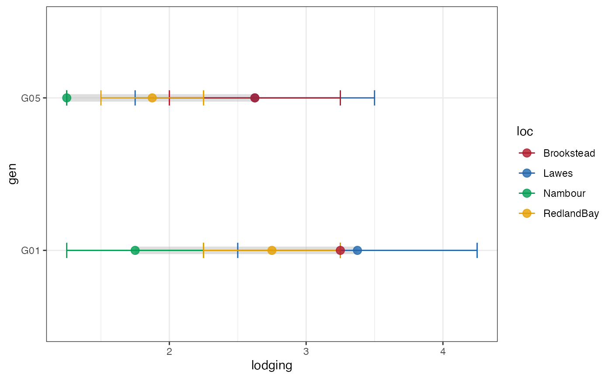
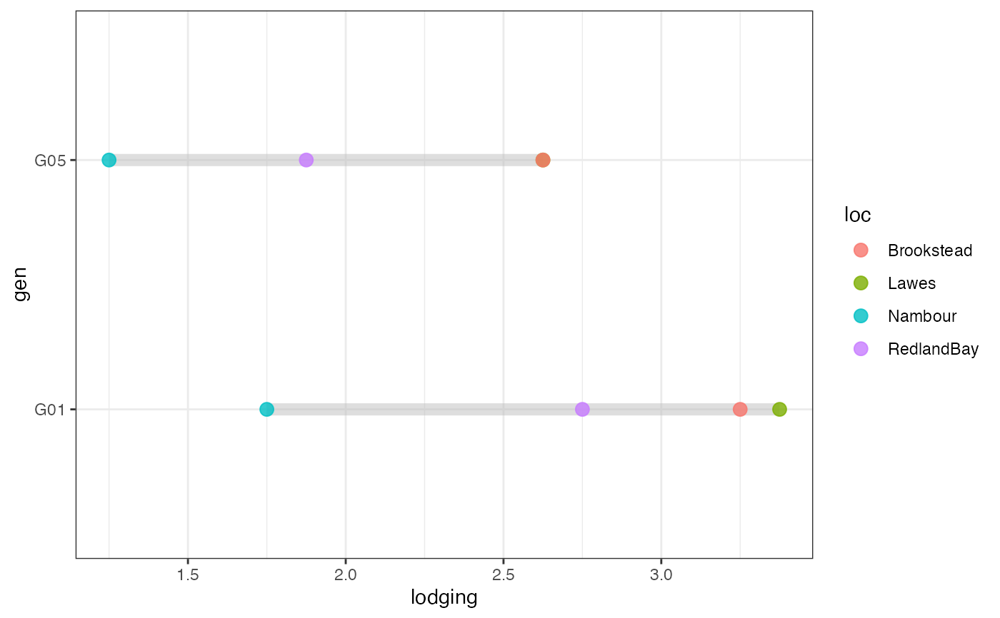

Plot Group-wise Dumbell Plots
Usage
groupwise_dumbell(
data,
group,
trait,
genotype,
subset = c("facet", "list", "none"),
diff.sort = c("none", "ascending", "descending"),
segment = TRUE,
segment.size = 3,
segment.colour = "gray",
segment.alpha = 0.5,
point.size = 3,
point.alpha = 0.8,
error.bar = TRUE,
error.bar.width = 0.1,
ncol = NULL,
nrow = NULL
)Arguments
- data
The data as a data frame object. The data frame should possess columns specifying the group and trait.
- group
Name of column specifying the group as a character string.
- trait
Name of column specifying the trait as a character string.
- genotype
Name of column specifying the genotype as a character string.
- subset
The method for subsetting the plots according to the argument
"group". Either"facet"for getting an plot using faceting inggplot2or"list"for getting a list of plots.- diff.sort
The order for sorting the genotypes for plotting. Either
"ascending","descending"or"none".- segment
logical. If
TRUE, the dumbell segment is plotted. Default isTRUE.- segment.size
The size of the dumbell segment.
- segment.colour
The colour of the dumbell segment.
- segment.alpha
Alpha transparency for the dumbell segment.
- point.size
The size of the points.
- point.alpha
Alpha transparency for the points.
- error.bar
logical. If
TRUE, the error bars depicting standard errors are plotted. Default isTRUE.- error.bar.width
The width of the error bars.
- ncol
Number of columns when
subset = "facet".- nrow
Number of rows when
subset = "facet".
Examples
library(agridat)
library(ggplot2)
library(patchwork)
soydata <- australia.soybean
# soydata[soydata$loc == "Nambour", ]$lodging <- NA
checks <- c("G01", "G05")
checkdata <- soydata[soydata$gen %in% checks, ]
clrs <- c("#B2182B", "#2166AC", "#009E53", "#E69F00")
clrs_dark <- colorspace::darken(clrs, amount = 0.2)
# Group-wise dumbell plot with error bar
outg_dumbell1 <-
groupwise_dumbell(data = checkdata, group = "loc",
trait = "lodging", genotype = "gen",
subset = "none", diff.sort = "descending")
outg_dumbell1
outg_dumbell1 +
scale_colour_manual(values = clrs)

# Group-wise dumbell plot without error bar
outg_dumbell2 <-
groupwise_dumbell(data = checkdata, group = "loc",
trait = "lodging", genotype = "gen",
subset = "none", diff.sort = "descending",
error.bar = FALSE)
outg_dumbell2

outg_dumbell2 +
scale_colour_manual(values = clrs)
# Group-wise points with error bar as facets
outg_facet <-
groupwise_dumbell(data = checkdata, group = "loc",
trait = "lodging", genotype = "gen",
subset = "facet")
outg_facet
outg_facet +
scale_colour_manual(values = clrs)
# Group-wise points with error bar as list
outg_list <-
groupwise_dumbell(data = checkdata, group = "loc",
trait = "lodging", genotype = "gen",
subset = "list")
wrap_plots(outg_list, nrow = 2, guides = "collect")
outg_list <-
lapply(seq_along(outg_list), function(i) {
outg_list[[i]] +
scale_colour_manual(values = clrs[i])
})
#> Scale for colour is already present.
#> Adding another scale for colour, which will replace the existing scale.
#> Scale for colour is already present.
#> Adding another scale for colour, which will replace the existing scale.
#> Scale for colour is already present.
#> Adding another scale for colour, which will replace the existing scale.
#> Scale for colour is already present.
#> Adding another scale for colour, which will replace the existing scale.
wrap_plots(outg_list, nrow = 2, guides = "collect")